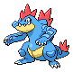
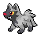

常磐市、1号道路、真新镇
通关后
常青市
常青市Bulbapedia 原图
常青市是一座热爱自然的小城市，一年四季都被绿意包围。它位于北边的2号道路、南边的1号道路和西边的22号道路之间。
| 宝可梦 | 版本 | 方式 | 等级 | 出现率 |
|---|---|---|---|---|
| 冲浪 | ||||
| 心金 / 魂银 | 冲浪 | Lv.5-10 | 90% | |
| 心金 / 魂银 | 冲浪 | Lv.10 | 10% | |
| 钓鱼 | ||||
| 心金 / 魂银 | 破旧钓竿 | Lv.10 | 85% | |
| 心金 / 魂银 | 破旧钓竿 | Lv.10 | 15% | |
| 心金 / 魂银 | 好钓竿 | Lv.20 | 60% | |
| 心金 / 魂银 | 好钓竿 | Lv.20 | 40% | |
| 心金 / 魂银 | 厉害钓竿 | Lv.40 | 80% | |
| 心金 / 魂银 | 厉害钓竿 | Lv.40 | 20% | |
| 头锤（A 组树） | ||||
| 心金 / 魂银 | 头锤 | Lv.3-4 | 50% | |
| 心金 / 魂银 | 头锤 | Lv.3-4 | 30% | |
| 刺尾虫 | 心金 / 魂银 | 头锤 | Lv.3-4 | 20% |
| 头锤（B 组树） | ||||
| 心金 / 魂银 | 头锤 | Lv.5-7 | 50% | |
| 芭瓢虫 | 魂银 | 头锤 | Lv.5-7 | 30% |
| 心金 | 头锤 | Lv.5-7 | 30% | |
| 刺尾虫 | 心金 / 魂银 | 头锤 | Lv.5-7 | 20% |
| 道具 | 版本 | 位置 / 获得方法 |
|---|---|---|
| 招式学习器85（食梦） | 心金 / 魂银 | 西南边睡觉的男人给予（需要居合斩或冲浪） |
| 心金 / 魂银 | 友好商店东北边，树旁的花坛里（隐藏道具） | |
| 之后再来 | ||
| 招式学习器92（戏法空间） | 心金 / 魂银 | 打败道馆馆主青绿后由他给予 |
常青道馆
常青道馆在城镇北边的一座小山上。建筑开着，但里面没人。据入口外的一位老爷爷说，这座道馆以前一直没有馆主，直到最近才由一位来自真新镇的年轻人担任。不过他经常不在，所以挑战常青道馆要等以后了。
训练家之家
训练家之家 1FBulbapedia 原图
训练家之家 B1FBulbapedia 原图
训练家之家在市中心。它建在宝可梦训练家的终极目标石英高原附近，参加者可以在规则统一的环境里对战。据屋里的访客说，只有最优秀的训练家才会聚集在这里。这些训练家其实是通过宝可计步器遇到的真实玩家，计步器和游戏同步后就会出现，这样最多能多遇到 10 位训练家。训练家队伍中超过 50 级的宝可梦都会被降到 50 级。在这里对战没有经验值也没有奖金，但每赢一场玩家能得到 1 BP。如果玩家没用过宝可计步器，默认对手是凯尔，他的队伍里有空木博士三只宝可梦各自的最终形态。
| 宝可梦 | 详情 |
|---|---|
Lv.50 · 草 | 特性：茂盛 携带： 招式：能量球、守住、寄生种子、剧毒 |
Lv.50 · 火 | 特性：猛火 携带：沙鳞果 招式：喷火、真气弹、喷射火焰、替身 |
 大力鳄Lv.50 · 水 | 特性：激流 携带： 招式：攀瀑、咬碎、冰冻拳、龙之舞 |
1号道路
1号道路Bulbapedia 原图
1号道路是一条宁静的乡间道路，从常青市往南通往真新镇。
| 训练家 | 宝可梦 | 奖金 |
|---|---|---|
| School Kid Sherman | ₽860 | |
| School Kid Danny | ₽860 | |
| 精英训练家 French | ₽2820 | |
| 精英训练家 Quinn | ₽2820 |
| 宝可梦 | 版本 | 方式 | 等级 | 出现率 |
|---|---|---|---|---|
| 心金 / 魂银 | 草丛 | Lv.2-4 | 早 45% · 日 45% · 夜 0% | |
| 心金 / 魂银 | 草丛 | Lv.2 | 早 30% · 日 30% · 夜 0% | |
| 心金 / 魂银 | 草丛 | Lv.2-3, 6 | 早 0% · 日 0% · 夜 55% | |
| 尾立 | 心金 / 魂银 | 草丛 | Lv.3 | 早 20% · 日 20% · 夜 0% |
| 心金 / 魂银 | 草丛 | Lv.6 | 早 5% · 日 5% · 夜 0% | |
| 心金 / 魂银 | 草丛 | Lv.2-4 | 早 0% · 日 0% · 夜 45% | |
| 头锤（A 组树） | ||||
| 心金 / 魂银 | 头锤 | Lv.2-3 | 50% | |
| 心金 / 魂银 | 头锤 | Lv.2-3 | 30% | |
| 刺尾虫 | 心金 / 魂银 | 头锤 | Lv.2-3 | 20% |
| 头锤（B 组树） | ||||
| 心金 / 魂银 | 头锤 | Lv.5-6 | 50% | |
| 芭瓢虫 | 魂银 | 头锤 | Lv.5-6 | 30% |
| 心金 | 头锤 | Lv.5-6 | 30% | |
| 刺尾虫 | 心金 / 魂银 | 头锤 | Lv.5-6 | 20% |
| 大量出现 | ||||
 土狼犬 | 心金 / 魂银 | 大量出现 | Lv.2 | 40% |
| 特殊 | ||||
| 心金 / 魂银 | 丰缘音乐 | Lv.2 | 20% | |
| 心金 / 魂银 | 丰缘音乐 | Lv.3 | 20% | |
| 心金 / 魂银 | 神奥音乐 | Lv.2-3 | 40% | |
| 道具 | 版本 | 位置 / 获得方法 |
|---|---|---|
| 心金 / 魂银 | 最西北那道台阶的南边，树上（每天一次） |
真新镇
真新镇Bulbapedia 原图
真新镇是一座安静的小镇，位于1号道路的高草丛和21号道路的海面之间。北边两栋房子各住着一位关都地区的前冠军。大木博士的研究所在南边。
| 宝可梦 | 版本 | 方式 | 等级 | 出现率 |
|---|---|---|---|---|
| 冲浪 | ||||
| 心金 / 魂银 | 冲浪 | Lv.30-35 | 90% | |
| 心金 / 魂银 | 冲浪 | Lv.35 | 10% | |
| 钓鱼 | ||||
| 心金 / 魂银 | 破旧钓竿 | Lv.10 | 85% | |
| 心金 / 魂银 | 破旧钓竿 | Lv.10 | 15% | |
| 心金 / 魂银 | 好钓竿 | Lv.20 | 40% | |
| 心金 / 魂银 | 好钓竿 | Lv.20 | 30% | |
| 心金 / 魂银 | 好钓竿 | Lv.20 | 20% | |
| 心金 / 魂银 | 好钓竿 | Lv.20 | 10% | |
| 心金 / 魂银 | 厉害钓竿 | Lv.40 | 40% | |
| 心金 / 魂银 | 厉害钓竿 | Lv.40 | 30% | |
| 心金 / 魂银 | 厉害钓竿 | Lv.40 | 20% | |
| 心金 / 魂银 | 厉害钓竿 | Lv.40 | 10% | |
| 头锤（A 组树） | ||||
| 心金 / 魂银 | 头锤 | Lv.2-3 | 50% | |
| 心金 / 魂银 | 头锤 | Lv.2-3 | 30% | |
| 刺尾虫 | 心金 / 魂银 | 头锤 | Lv.2-3 | 20% |
| 头锤（B 组树） | ||||
| 心金 / 魂银 | 头锤 | Lv.5-6 | 50% | |
| 芭瓢虫 | 魂银 | 头锤 | Lv.5-6 | 30% |
| 心金 | 头锤 | Lv.5-6 | 30% | |
| 刺尾虫 | 心金 / 魂银 | 头锤 | Lv.5-6 | 20% |
| 道具 | 版本 | 位置 / 获得方法 |
|---|---|---|
| 之后再来 | ||
| 秘传学习器08（攀岩） | 心金 / 魂银 | 大木研究所，集齐全部 16 枚徽章后由大木博士给予 |
| 心金 / 魂银 | 大木研究所，给大木博士看在埋藏之塔抓到的固拉多和盖欧卡后由他给予 | |
赤红的家
西北边的房子是赤红和他妈妈的家，但赤红现在不在。他打败了邻居兼劲敌青绿，成为冠军，但为了继续修行而放弃了宝可梦联盟的冠军之位。他妈妈为他骄傲，却还是担心他一个人在某个地方。
青绿的家
东北边的房子是青绿和他姐姐七实的家，但青绿也不在。七实说她弟弟是常青市的道馆馆主，可他经常出门旅行，给道馆的挑战者带来不少麻烦。
七实的美容时间
在 15:00～16:00 之间和七实说话，她会给一只宝可梦梳毛。梳毛能提高宝可梦的亲密度，想得到某些宝可梦，提高亲密度是必须的。七实每天只提供一次梳毛服务。
大木研究所
南边的大建筑是大木博士的研究所。和博士说话，他会评价你的图鉴完成度。他还请你集齐关都全部 8 枚道馆徽章后再来，到时会有礼物给你。
原文：Bulbapedia《Walkthrough:Pokémon HeartGold and SoulSilver/Part 26》（修订版本 4453099，），作者见原文页面历史。本页由 Eli 的杂货间翻译为中文，并有改动（重新排版、精简部分图注）。原文与译文均以 CC BY-NC-SA 2.5 授权。配图来自原站，版权归原作者与游戏厂商。